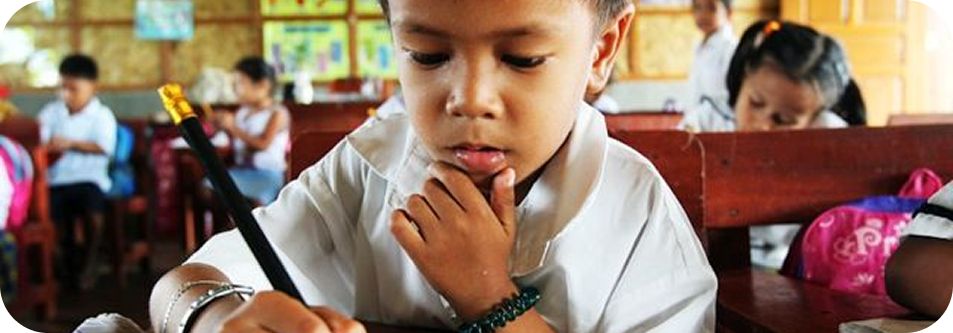

Nossa Missão
Promover o desenvolvimento sustentável e levar assistência, oportunidades e educação para as comunidades que mais precisam.Nós somos uma organização dedicada a transformar vidas e criar um impacto positivo na comunidade através da educação, apoio socioambiental e ação comunitária. Nossa missão é unir pessoas por um futuro mais justo, inclusivo e sustentável.

Nossa Missão
Promover o desenvolvimento sustentável e levar assistência, oportunidades e educação para as comunidades que mais precisam.Nossa Visão
Ser referência em transformação social, construindo uma rede sólida de apoio, voluntariado e conscientização ambiental.Nossos Valores
Transparência, empatia, respeito ao meio ambiente, solidariedade e compromisso com a transformação de vidas.